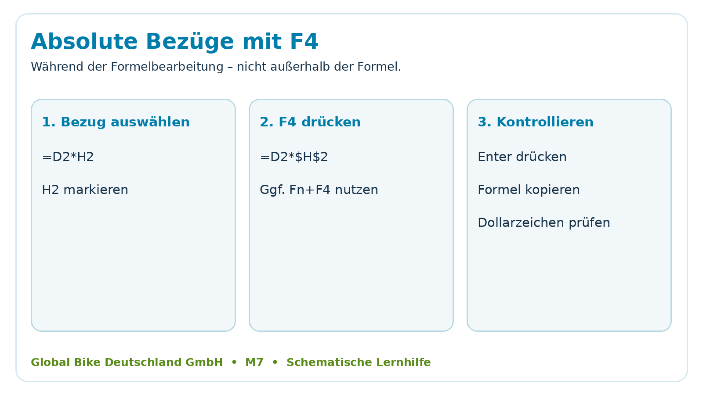

M7 – Relative und absolute Zellbezüge in Excel
Global Bike Deutschland GmbH – Verwaltung
1. Bedeutung von Zellbezügen im Büroalltag
In einer betrieblichen Tabelle werden häufig viele gleichartige Berechnungen benötigt. Beispielsweise werden Mengen mit Einzelpreisen multipliziert oder einzelne Kostenbeträge mit einem gemeinsamen Planungszuschlag berechnet. Statt jede Formel neu zu schreiben, lässt sie sich kopieren. Excel passt dabei relative Zellbezüge an. Manche Werte, etwa ein zentral hinterlegter Prozentsatz, sollen dagegen bei jeder Berechnung aus derselben Zelle stammen. Dafür werden absolute Zellbezüge verwendet. Die richtige Wahl verhindert Fehler und macht Arbeitsmappen wiederverwendbar.
2. Aufbau einer Zelladresse
B4 bezeichnet die Zelle in Spalte B und Zeile 4. In einer Formel verweist B4 auf deren Inhalt. Ein Dollarzeichen vor dem Spaltenbuchstaben fixiert die Spalte beim Kopieren; ein Dollarzeichen vor der Zeilennummer fixiert die Zeile. $B$4 fixiert beides. Das Dollarzeichen ist hier kein Währungssymbol. Ein absoluter Bezug schützt den Zellinhalt nicht vor Änderungen.
3. Relative Zellbezüge
Relative Bezüge sind der Normalfall. Sie enthalten keine Dollarzeichen. Beim Kopieren einer Formel bleiben die Abstände zwischen Formelzelle und Bezugszellen erhalten.
| Formelzelle | Formel |
|---|---|
| D2 | =B2*C2 |
| D3 (eine Zeile tiefer) | =B3*C3 |
| D4 (zwei Zeilen tiefer) | =B4*C4 |
| E2 (eine Spalte weiter rechts) | =C2*D2 |
Die letzte Zeile zeigt nur die technische Veränderung beim Kopieren nach rechts. Ob diese Formel fachlich sinnvoll ist, hängt von den Spalteninhalten ab. Relative Bezüge eignen sich besonders für zeilenweise Berechnungen mit jeweils eigenen Eingabewerten.

4. Absolute Zellbezüge
Ein absoluter Bezug bleibt beim Kopieren in andere Zellen unverändert. Steht ein gemeinsamer Zuschlagssatz in H2, kann die Formel =D2*$H$2 verwendet werden. Beim Kopieren nach unten entsteht =D3*$H$2. D2 wird angepasst, H2 bleibt fest.
Wird der Inhalt von H2 geändert, rechnen alle darauf bezogenen Formeln mit dem neuen Wert, sofern die automatische Berechnung aktiv ist. Absolut bedeutet also nicht, dass der Wert unveränderlich ist. Die Fixierung gilt für das Kopieren von Formeln, nicht für jede denkbare Änderung der Tabellenstruktur. Beim Einfügen, Löschen oder Verschieben von Zellen können sich auch absolute Adressen ändern.
5. Relative und absolute Zellbezüge im Vergleich
| Merkmal | Relativ | Absolut |
|---|---|---|
| Schreibweise | B2 |
$B$2 |
| Eine Zeile tiefer kopiert | B3 |
$B$2 |
| Eine Spalte weiter kopiert | C2 |
$B$2 |
| Typischer Zweck | Unterschiedliche Werte je Datensatz | Gemeinsamer Satz oder Bezugswert |
Entscheidend ist die fachliche Frage: Soll die nächste Formel den Wert aus der nächsten Zeile verwenden oder weiterhin denselben zentralen Wert? Nicht alle Bezüge einer Formel müssen gleichartig sein.
6. Bedeutung des Dollarzeichens

$H$2 besteht aus einem fixierten Spaltenbuchstaben H und einer fixierten Zeile 2. Die Zeichen stehen jeweils unmittelbar vor dem zu fixierenden Bestandteil. Ein absoluter Bezug ist keine fest eingetragene Zahl: =D2*0,08 enthält einen festen Zahlenwert, während =D2*$H$2 auf eine veränderbare Eingabezelle verweist. Die zweite Variante erleichtert die zentrale Pflege eines gemeinsamen Satzes.
7. Klick-Anleitung: F4-Taste verwenden

- Ergebniszelle auswählen und eine Formel beginnen, beispielsweise
=D2*H2. - Vor dem Bestätigen den Bezug H2 in der Bearbeitungsleiste markieren oder den Cursor in diesen Bezug setzen.
- F4 drücken. Aus H2 wird
$H$2. - Die Dollarzeichen kontrollieren und Enter drücken.
- Die Formelzelle erneut auswählen und den Bezug in der Bearbeitungsleiste prüfen.
Beim wiederholten Drücken von F4 wechselt Excel normalerweise zwischen H2, $H$2, H$2, $H2 und wieder H2. Auf manchen Notebooks ist Fn+F4 erforderlich. Außerhalb der Formelbearbeitung hat F4 eine andere Funktion. Falls die Tastenkombination nicht funktioniert, können die Dollarzeichen direkt eingegeben werden. Die Anleitung bezieht sich auf Desktop-Excel für Windows.
8. Klick-Anleitung: Formeln kopieren und überprüfen
- Die erste Formel vollständig eingeben und mit Enter bestätigen.
- Die Ergebniszelle anklicken.
- Das Ausfüllkästchen unten rechts an der Zellmarkierung bis zur letzten Datenzeile ziehen.
- Die erste, eine mittlere und die letzte kopierte Formel in der Bearbeitungsleiste prüfen.
- Kontrollieren, ob die relativen Bezüge mitwandern und die absoluten Bezüge unverändert bleiben.
- Mindestens ein Ergebnis unabhängig nachrechnen.
Alternativ lässt sich die Formel mit Strg+C und Strg+V kopieren. Beim Einfügen ausschließlich als Werte geht die Formel verloren. Das Ausschneiden und Verschieben ist nicht dasselbe wie Kopieren.
9. Unabhängiges betriebliches Beispiel: Büromaterialkosten
Für eine interne Schulung der Global Bike Deutschland GmbH werden beispielhafte Nettokosten mit einem einheitlichen Planungszuschlag kalkuliert. Die Werte sind didaktisch simuliert und gehören nicht zum Hauptfall M1. Der Zuschlag ist eine interne Planungsgröße, keine Steuer und kein tatsächlich angefallener Aufwand.
In H1 steht „Planungszuschlag“, in H2 wird 8 % als numerischer Prozentwert eingetragen. Die Überschriften der folgenden Liste stehen in Zeile 1.
| Zeile | A – Material | B – Menge | C – Einzelpreis netto | D – Grundbetrag | E – Zuschlag | F – Planbetrag |
|---|---|---|---|---|---|---|
| 2 | Schreibblöcke | 10 | 3,50 € | 35,00 € | 2,80 € | 37,80 € |
| 3 | Ordner | 6 | 4,00 € | 24,00 € | 1,92 € | 25,92 € |
| 4 | Stifte | 20 | 1,20 € | 24,00 € | 1,92 € | 25,92 € |
In D2 steht =B2*C2, in E2 =D2*$H$2 und in F2 =D2+E2. Die drei Formeln werden bis Zeile 4 kopiert. In E4 muss anschließend =D4*$H$2 stehen.

Die Grundbeträge ergeben zusammen 83,00 €, die Zuschläge 6,64 € und die Planbeträge 89,64 €. Wird H2 testweise auf 10 % geändert, ergeben sich Zuschläge von 3,50 €, 2,40 € und 2,40 €. Der neue Gesamtplanbetrag beträgt 91,30 €. Anschließend den ursprünglichen Satz wiederherstellen. Alle Beträge sind hier ohne zusätzliche Rundungsschritte centgenau. Bei anderen Daten ist die betriebliche Rundungsregel zu beachten (M5).
10. Unabhängiges Beispiel: Prozentuale Anteile
Eine zweite, separate Beispieltabelle enthält drei simulierte Schulungskosten: B2 = 60 €, B3 = 90 €, B4 = 150 €. In B5 steht =SUMME(B2:B4) mit dem Ergebnis 300 €. In C2 steht =B2/$B$5. Die Formel wird bis C4 kopiert und die Ergebnisse werden als Prozentwerte formatiert.
| Zelle | Formel | Ergebnis |
|---|---|---|
| C2 | =B2/$B$5 |
20 % |
| C3 | =B3/$B$5 |
30 % |
| C4 | =B4/$B$5 |
50 % |
Der Zähler verändert sich, der Nenner bleibt gleich. Die Anteile ergeben zusammen 100 %. Bei einem Gesamtbetrag von null ist die Division nicht definiert. Der Fehler #DIV/0! muss fachlich geklärt werden. Nicht zusätzlich mit 100 multiplizieren, wenn das Prozentformat verwendet wird. M8 vertieft die Berechnung und Interpretation von Anteilen.
11. Freiwillige Vertiefung: gemischte Zellbezüge
Gemischte Bezüge fixieren nur eine Koordinate. $B2 hält die Spalte B fest, B$2 die Zeile 2. Diese Schreibweisen sind bei zweidimensionalen Berechnungstabellen hilfreich.
| Ausgangsbezug | Eine Zeile tiefer | Eine Spalte weiter rechts |
|---|---|---|
B2 |
B3 |
C2 |
$B$2 |
$B$2 |
$B$2 |
$B2 |
$B3 |
$B2 |
B$2 |
B$2 |
C$2 |
Beispiel: Stehen Mengen in A2:A4 und verschiedene Einzelpreise in B1:D1, kann in B2 die Formel =$A2*B$1 stehen. Beim Kopieren nach rechts und unten werden jeweils die passende Menge und der passende Preis verwendet. Diese Vertiefung ist freiwillig und kein zusätzlicher verbindlicher Prüfungsinhalt.
12. Typische Fehler und deren Behebung
| Beobachtung | Ursache und Abhilfe |
|---|---|
| Zuschlag verschwindet nach dem Kopieren | Satzbezug wandert in eine leere Zelle; absoluten Bezug prüfen |
| Alle Zeilen nutzen dieselbe Menge | Mengenbezug versehentlich fixiert; Dollarzeichen entfernen |
| Bezug bleibt nur in einer Richtung fest | Gemischten statt absoluten Bezug verwendet; beide Dollarzeichen prüfen |
| Prozentbetrag ist hundertmal zu hoch | Prozentwert falsch eingegeben oder zusätzlich mit 100 multipliziert |
| F4 wiederholt eine Aktion | Formelbearbeitung nicht aktiv; Bezug zuerst auswählen |
| Formel reagiert nicht auf Satzänderung | Satz als Zahl in Formel eingetragen oder Berechnung nicht automatisch |
| #DIV/0! | Gesamtwert null oder leer; Datengrundlage klären |
| #BEZUG! | Bezugszelle gelöscht; gültigen Bezug wiederherstellen |
| Ergebnis korrekt, Formel aber falsch | Zufällig gleiche Ausgangswerte; mit unterschiedlichen Werten testen |
| Kopierte Zelle enthält nur Zahl | Als Werte eingefügt; Formel erneut kopieren |
| Neue Datenzeile fehlt | Formel oder Summenbereich nicht erweitert; Funktionsprüfung durchführen |
13. Funktionsprüfung und Wiederverwendbarkeit
Eine verlässliche Arbeitsmappe trennt Eingaben, Berechnungen und Auswertungen. Gemeinsame Bezugsgrößen werden eindeutig beschriftet. Eine zentrale Eingabezelle vermeidet widersprüchliche Sätze in verschiedenen Formeln.
Zur freiwilligen Kontrolle kann eine Kopie der Arbeitsmappe genutzt werden: Einen zeilenbezogenen Eingabewert verändern und prüfen, ob die betroffenen Ergebnisse reagieren. Danach einen zentralen Satz verändern und prüfen, ob alle davon abhängigen Zeilen reagieren. Ursprüngliche Werte wiederherstellen. Bei einer zusätzlichen Zeile die Formeln und Auswertungsbereiche kontrollieren. Ein plausibles Ergebnis allein genügt nicht; auch die Formel muss stimmen.
14. Freiwillige Selbstkontrolle
- Was bezeichnet die Adresse C7?
- Wie verändert sich
=B2*C2beim Kopieren eine Zeile nach unten? - Wie wird H2 vollständig fixiert?
- Wie lautet
=D2*$H$2zwei Zeilen tiefer? - Bleibt der Inhalt einer absolut referenzierten Zelle unveränderlich?
- Welchen Vorteil hat ein zentral hinterlegter Prozentsatz gegenüber einer Zahl in jeder Formel?
- Welche Formel berechnet den Anteil von B3 an der Gesamtsumme in B8 mit kopierfähigem Nenner?
- Was ist zu prüfen, wenn F4 nicht die erwarteten Dollarzeichen setzt?
- Warum sollten kopierte Formeln mit unterschiedlichen Eingabewerten getestet werden?
- Was ist bei einer neu ergänzten Datenzeile zu kontrollieren?
Kontrollhinweise
- Spalte C, Zeile 7.
=B3*C3.$H$2.=D4*$H$2.- Nein, die Adresse bleibt beim Kopieren fest; der Inhalt kann geändert werden.
- Eine zentrale Änderung wirkt auf alle abhängigen Formeln.
=B3/$B$8, anschließend Prozentformat wählen.- Formelbearbeitung, ausgewählten Bezug und gegebenenfalls Fn-Taste prüfen; alternativ Dollarzeichen eingeben.
- Gleiche Eingabewerte können falsche Bezüge verdecken.
- Ob die benötigten Formeln vorhanden sind und die Auswertungsbereiche die neue Zeile umfassen.
Keine zusätzliche Abgabe oder Bewertung.
15. Weiterführende Materialien
M5 behandelt Formeln und Grundrechenarten, M6 die grundlegenden Funktionen. M8 vertieft prozentuale Anteile, M9 die Datums- und Fristenberechnung, M14 die Qualitätskontrolle und Wiederverwendbarkeit. M7 bleibt während der gesamten Lernsituation verfügbar.